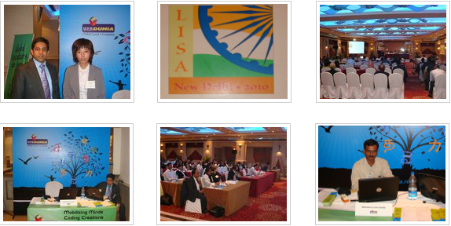
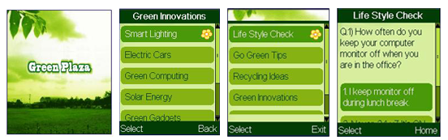

Web Media
Hello Tunes Portal developed by Webdunia is now online for Airtel Customers
Lingual Portal Developed by Webdunia for SBI Insurance
SBI launches its multi-lingual insurance portal developed by Webdunia in Jan-2012. Portal is localized in 9 Indian languages including Hindi, Punjabi Marathi, Gujarati, Telugu, Tamil, Malayalam, Kannada and Bengali.
The multi-lingual portal has been created to facilitate communication with customers in the language, they are most comfortable with. The initiative is aimed at further simplifying customers' understanding about SBI products and services so as to enable them to make well-informed decisions before investing their hard-earned money.
User can visit the portal http://sbilife.co.in/ and can select the desired language from Top navigation menu.
Comviva CRBT Generic Portal Developed by Webdunia
Generic Portal for CRBT offers a listing of caller tunes to telecom subscribers. Caller tunes can be bought, sampled, and gifted via the web interface. The generic portal addresses the problem of a Telecom subscriber of searching a Caller Tune on IVR (Interactive Voice Response) and subscribing it. The subscribers can listen to a tune sample on the web and can also set it as their caller tune after entering mobile number and password.
Orange mobile customers can visit http://www.dandana.orange.jo/ to play their favorite song for their special/all callers instead of the normal “tring tring”.
Webdunia generalized the Web Interface by providing a Generic portal implementation for Hello Tunes interface, now it’s quite easy to deploy the solution to multiple operators without re-developing the solution. The solution supports 3 themes, thus provides an advantage to do custom settings at all levels as per our telecom operators requirements.
Webdunia @ LISA Conference
Mr. Vishal Dakoliya, National Head (Business Development) and Mr. Jitendra Jaiswal, Project Manager (Localization) represented Webdunia @ LISA. The event bought Indian Localization industry at the center stage as main source of localization experts. With the ability to cater services in 22 Indian and more than 35 International Languages, Webdunia is one stop shop for all the Localization/Translation requirements.

Webdunia wins Nokia's 2010 Calling All Innovators Award
"We are honored to be recognized and rewarded by Nokia at this Global Forum," said Pankaj Jain, President and COO, Webdunia.com India Pvt. Ltd. "Green Plaza is an initiative designed to raise awareness among all age groups to save the planet Earth. Webdunia develops unique mobile applications that make a difference in people's everyday life. We have been actively publishing applications across various platforms in Infotainment, Entertainment and News categories".
Babita Jain, Senior Manager (Technology) said, "We are very glad to be in the limelight on a global platform of Nokia World. Going Green is a big necessity of today's World, our application empowers the users to monitor, measure and manage their energy requirements from their mobile phones. With the right actions they can leave smaller carbon footprint and thus can help in making the environment greener".
The award was received by Mr. Pankaj Jain, President and COO, Webdunia.com India Pvt. Ltd. on September 15, 2010 in London.
Features
- The portal displays hello tunes in various categories.
- Easy search by song title/artist/album/movie to find preferred song.
- Provide flexibility to subscriber to easily change their ring back tone (heloo tune) with multiple features and languages.

Hellotunes Portal is an online library of India’s largest collection of Hello Tunes. From visiting the portal, user can listen to a tune sample on the web and can set it as caller tune after entering mobile number and password.
Features